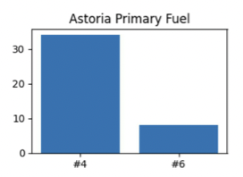
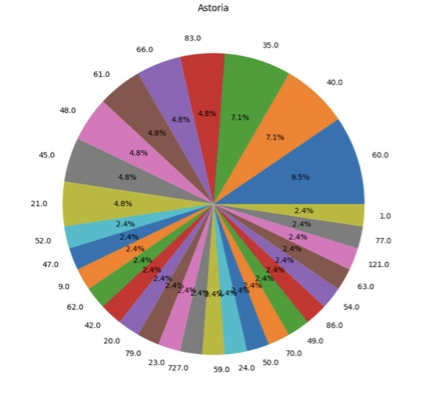
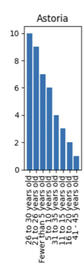

The NYC Clean Heat program is focused on shifting NYC’s energy source to renewable energy. Their goal is to achieve “70% renewably sourced electricity by 2030 and a zero-emission electric grid by 2040” (NYSERDA). Two of the popular fuel that encourages people to use are #4 and #6 fuel. #4 Fuel is distillate fuel oil made by blending distillate fuel oil and residual fuel oil stocks. #6 Fuel is a heavy oil used by ocean liners and tankers as fuel and for oil-burning power plants. Before changing, installing, or removing a boiler, the owner needs to report the information to the Department of Environmental Protection Boiler Registration (DEP). It is usually monitored through the Clean Air Tracking system at the DEP. Along with that, The Greener Greater Buildings plan is a six-point plan to make the 22,000 buildings that are over 50,000 square feet in New York City energy efficient. This is because these buildings are responsible for 45% of the energy usage in NYC. The points in the plan are to create a law that addresses a loophole in New York’s state code so that inefficient equipment must be replaced by efficient equipment, to require large buildings to upgrade their lighting, to require that large buildings do an annual analysis of their energy consumption, to require large buildings to conduct a decennial energy audit and to do retro-commissioning, to train workers for the new green jobs created by this plan, and to finance fund owners who cannot afford to make these upgrades. Building is converted to clean heating fuels by using other fuels such as natural gas, renewable energy, and biofuels which decreases the amount of CO2 released into the atmosphere.
All neighborhoods use more #4 primary fuel than #6 primary fuel. From highest to lowest usage of #6 primary fuel compared to #4 primary fuel, the neighborhoods are Flushing, Jackson Heights, Woodhaven, and Astoria. The most common boiler age range in each neighborhood is 21 to 26 years old, with the excpetion of Astoria, whose most cmmon boiler age range is 26 to 30.

Figure 1

Figure 2

Figure 3
Map
[Return to Home Page]